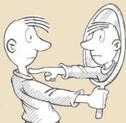

Yo, Sergio Labajos, soy un estudiante de Animacion videojuegos y entornos interactivos que se ha formado en la U-tad, una prestigiosa universidad dedicada a la enseñanza de este campo.
En este apartado de la pagina lo dedicara más a hablar sobre mi de una forma mas personal que técnica.

Mis hobbies
Me considero una persona con muchas aficciones diferentes, aunque no soy una persona obsesiva, es decir, me gustan muchas cosas pero ninguna de ellas las hago de una forma compulsiva.
Entre ellas destacaré el fútbol (tanto jugarlo como verlo), la buena comida, pasar tiempo con mis amigos y con mi pareja, hacer deporte y disfrutar de la vida con pequeñas escapadas, como una huida a una casa rural
¿Porque me dedico a esto?
La respuesta es simple: es lo mio. Aparentemente no hay un motivo concreto lo sufientemente importante más que tendgo un gran dominio y una gran habilidad a la hora de controlar los ordenadores, asi como de perfeccionar mi trabajo
Siempre he sabido que acabaría trabajando con los ordenadores, mi fuerte, ya que he sido de los primeros que ha nacido con un ordenador a lado, y a pesar de no tener la tecnología actual, siempre he sido capaz de dominarlos y entenderlos.
Y no, no soy el ejemplo clásico de una persona que ha acabado en un trabajo que se le da bien pero que no le gusta. Todo lo contrario. ¡Me encanta lo que hago!